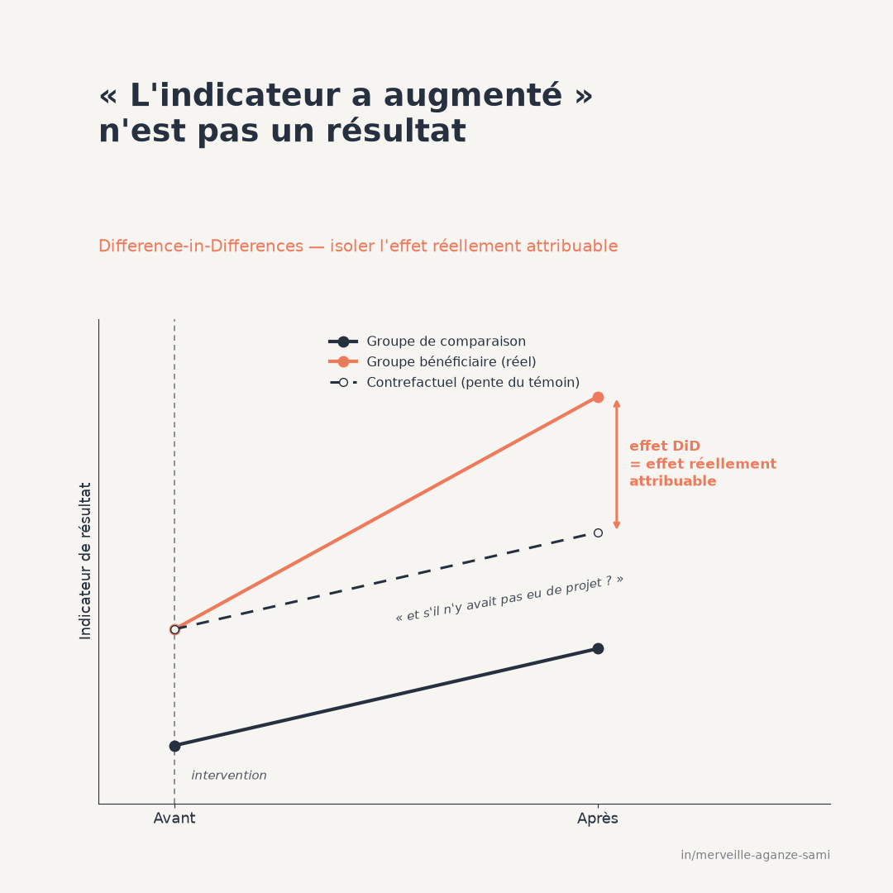

La lecture la plus courante d'un résultat de projet consiste à comparer la valeur d'un indicateur avant et après l'intervention chez les bénéficiaires. Une progression est alors interprétée comme un effet. Cette inférence suppose implicitement qu'en l'absence du projet, l'indicateur serait resté stable.
Cette supposition est rarement fondée. Une saison agricole favorable, une évolution des prix, une politique nationale ou une dynamique déjà engagée avant la première activité produisent des variations indépendantes de l'intervention. La comparaison avant-après sur le seul groupe bénéficiaire agrège l'effet du projet et l'ensemble de ces facteurs.
1. Ce que la double différence isole
La méthode suit deux groupes — bénéficiaires et groupe de comparaison — sur au moins deux périodes. Elle calcule la variation de l'indicateur dans chaque groupe, puis la différence entre ces deux variations. Le raisonnement est explicite : ce qui a affecté les deux groupes de la même manière s'annule dans la soustraction ; ce qui subsiste est attribuable à ce qui distingue les deux groupes, c'est-à-dire l'intervention.
L'illustration classique de cette approche en évaluation de politique publique repose sur la comparaison de deux territoires soumis à des règles différentes, l'un servant de référence à l'autre (Card & Krueger, 1994). Le principe s'applique de la même manière à un projet de développement dont la couverture géographique est partielle.
Le contrefactuel implicite. La méthode construit une trajectoire hypothétique : celle qu'aurait suivie le groupe bénéficiaire si l'évolution y avait été la même que dans le groupe témoin. L'estimation d'effet correspond à l'écart entre la trajectoire observée et cette projection. Toute la validité de l'exercice repose donc sur la crédibilité de cette projection, non sur la qualité du calcul lui-même.
2. L'hypothèse de tendances parallèles
La condition d'identification s'énonce ainsi : en l'absence d'intervention, les deux groupes auraient connu la même évolution. Il ne s'agit pas de supposer qu'ils étaient identiques — un écart de niveau constant est admis et disparaît dans la double différence — mais que leurs trajectoires auraient été parallèles.
Cette hypothèse porte sur une situation qui n'a pas eu lieu ; elle ne peut donc pas être démontrée. Elle peut en revanche être rendue plus ou moins plausible par l'examen des périodes antérieures à l'intervention : si les deux groupes ont suivi des trajectoires parallèles pendant plusieurs périodes avant le démarrage, l'hypothèse gagne en crédibilité.
3. Vérifier les tendances antérieures sans s'en satisfaire
La représentation graphique des écarts période par période, avant et après l'intervention, constitue la vérification usuelle. Elle appelle toutefois deux réserves. D'une part, un test sur les périodes antérieures manque souvent de puissance : l'absence d'écart détecté ne signifie pas l'absence d'écart. D'autre part, sélectionner les cas sur la base de ce test introduit un biais dans les estimations retenues, un effet documenté qui invite à traiter cette vérification comme un élément d'appréciation plutôt que comme un critère de validation (Roth, 2022).
La démarche recommandée consiste donc à présenter le graphique des périodes antérieures, à énoncer l'hypothèse comme une hypothèse, et à examiner la sensibilité du résultat à des écarts plausibles de parallélisme.
4. Les erreurs-types
Une difficulté fréquemment sous-estimée concerne l'inférence. Les observations d'une même unité géographique sont corrélées dans le temps, et les unités d'un même territoire le sont entre elles. Traiter les observations comme indépendantes conduit à des erreurs-types nettement trop faibles et à des conclusions de significativité non fondées (Bertrand et al., 2004).
La correction usuelle regroupe les erreurs au niveau auquel le traitement est assigné — territoire, district, groupement. Elle suppose toutefois un nombre suffisant de groupes ; en deçà d'une trentaine, des méthodes d'inférence adaptées aux petits nombres de groupes sont nécessaires. Le nombre de groupes retenus doit figurer dans le rapport, au même titre que la taille d'échantillon (Angrist & Pischke, 2009).
5. Lorsque les dates d'entrée sont échelonnées
De nombreux projets démarrent à des dates différentes selon les zones. Cette configuration, longtemps traitée par une régression à effets fixes standard, pose une difficulté identifiée récemment : l'estimateur combine implicitement des comparaisons entre unités déjà traitées et unités traitées plus tard, comparaisons dont certaines reçoivent des pondérations négatives lorsque l'effet varie dans le temps (Goodman-Bacon, 2021).
Des estimateurs conçus pour ce cas construisent des comparaisons explicites entre groupes entrés à une date donnée et unités non encore traitées, puis agrègent ces effets selon une pondération transparente (Callaway & Sant'Anna, 2021). Lorsque les dates d'entrée diffèrent, leur usage devrait être la règle plutôt que l'exception.
6. Autres points à documenter
- Composition de l'échantillon. Si les unités observées diffèrent entre les deux périodes, la double différence mesure en partie un changement de composition. Un panel de mêmes unités est préférable ; à défaut, la comparabilité des échantillons doit être établie.
- Effets d'anticipation. Une annonce préalable du projet peut modifier les comportements avant le démarrage effectif, ce qui contamine la période de référence. La date à retenir est celle de la première influence plausible, non celle de la première activité.
- Diffusion vers le groupe témoin. Si les bénéfices atteignent partiellement le groupe de comparaison — proximité géographique, échanges commerciaux, mobilité des personnes — l'effet estimé est sous-évalué. Une distance minimale entre zones traitées et zones témoins limite ce risque.
- Sélection sur une baisse temporaire. Lorsque le ciblage retient des unités en difficulté passagère, leur remontée spontanée sera comptabilisée comme un effet. L'examen de plusieurs périodes antérieures permet de repérer cette configuration.
Points essentiels
- Une progression d'indicateur n'est pas un résultat tant qu'elle n'est pas rapportée à une référence
- La méthode repose sur une hypothèse de trajectoires parallèles, qui s'énonce mais ne se démontre pas
- L'examen des périodes antérieures renforce la plausibilité sans constituer une validation
- Les erreurs-types doivent être regroupées au niveau d'assignation du traitement
- Lorsque les dates d'entrée diffèrent, la régression à effets fixes standard n'est plus appropriée
La question qui fonde une évaluation d'impact n'est pas de savoir si un indicateur a progressé, mais par rapport à quelle référence cette progression est mesurée. La construction et la justification de cette référence constituent l'essentiel du travail méthodologique.
Références
- Angrist, J. D., & Pischke, J.-S. (2009). Mostly Harmless Econometrics: An Empiricist's Companion. Princeton: Princeton University Press.
- Bertrand, M., Duflo, E., & Mullainathan, S. (2004). How Much Should We Trust Differences-in-Differences Estimates? The Quarterly Journal of Economics, 119(1), 249–275. doi.org/10.1162/003355304772839588
- Callaway, B., & Sant'Anna, P. H. C. (2021). Difference-in-Differences with multiple time periods. Journal of Econometrics, 225(2), 200–230. doi.org/10.1016/j.jeconom.2020.12.001
- Card, D., & Krueger, A. B. (1994). Minimum Wages and Employment: A Case Study of the Fast-Food Industry in New Jersey and Pennsylvania. American Economic Review, 84(4), 772–793.
- Goodman-Bacon, A. (2021). Difference-in-differences with variation in treatment timing. Journal of Econometrics, 225(2), 254–277. doi.org/10.1016/j.jeconom.2021.03.014
- Roth, J. (2022). Pretest with Caution: Event-Study Estimates after Testing for Parallel Trends. American Economic Review: Insights, 4(3), 305–322. doi.org/10.1257/aeri.20210236

Merveille Aganze Sami
Conseillère MEL & Gestion de Bases de Données. Plus de 9 ans d'expérience en suivi-évaluation, SIG et digitalisation auprès d'organisations internationales (GIZ, Enabel) en RD Congo.
Une évaluation d'impact à concevoir ?
Prendre contact